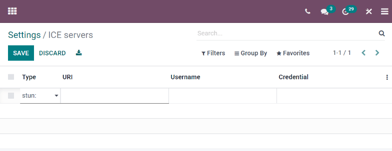

Configurar servidores ICE con Twilio¶
La aplicación Conversaciones de Odoo usa un API WebRTC y una conexión red de pares para llamadas de voz y video. Si uno de los asistentes a la llamada se encuentra detrás de una NAT simétrica, tendrá que configurar un servidor ICE para establecer una conexión con esta persona. Para configurar un servidor ICE, primero debe crear una cuenta de Twilio para video llamadas para después conectar esta cuenta con Odoo.
Crear una cuenta de Twilio¶
Primero vaya a Twilio y haga clic en Comienza de forma gratuita para crear una cuenta nueva. Ingrese su nombre y dirección de correo, cree una contraseña y acepte los términos de servicio de Twilio. Finalmente, haga clic en Start your free trial (inicie su periodo de prueba) y verifique su dirección de correo.
Después, ingrese su número telefónico a Twilio para que le puedan enviar un SMS con un número de verificación. Ingrese el código a Twilio para verificar su número telefónico.
Después de esto, Twilio lo redirigirá a la página de bienvenida. Use esta lista para responder las preguntas de Twilio:
Para Which Twilio product are you here to use? (¿Qué producto de Twilio quiere usar?), seleccione Video.
Para What do you plan to build with Twilio? (¿Qué quiere construir con Twilio?), seleccione Other (otro).
Para How do you want to build with Twilio? (¿Cómo quiere construir con Twilio?), seleccione With no code at all (Sin código).
Para What is your goal today? (¿Qué quiere lograr hoy?), seleccione 3rd party integrations (integraciones con terceros).
Cambie el país de facturación si es necesario y, para terminar, haga clic en Get Started with Twilio (empezar a usar Twilio).
Ubicación del Account SID (SID de cuenta) y del Auth Token (token de autenticación)¶
Para ubicar el Account SID y el Auth Token, vaya al tablero de su cuenta de Twilio y haga clic en Develop (desarrollar) que se encuentra en la barra lateral. En la sección Account Info (información de la cuenta), ubique el Account SID y el Auth Token. Necesita esta información para conectar Twilio con Odoo.

Conectar Twilio a Odoo¶
Abra la base de datos de Odoo y vaya a . Marque la casilla junto a Usar los servidores ICE de Twilio e ingrese el SID de cuenta de Twilio y el Token de autentificación de cuenta de Twilio. Para terminar, haga clic en Guardar para aplicar los cambios.

Definir una lista de servidores ICE personalizados¶
Este paso no es necesario para configurar Twilio, pero si Twilio no está configurado o por algún motivo no sirve, Odoo recurrirá a la lista de servidores personalizados ICE. El usuario debe definir la lista de servidores personalizados ICE.
En , haga clic en el botón Servidores ICE que se encuentra en la categoría Lista personalizada de servidores ICE.

Odoo le redirigirá a la página de servidores ICE. Aquí puede definir su propia lista de servidores ICE.
Nota
Para instancias locales de Odoo, el paquete python3-gevent es necesario para que el módulo Discuss pueda ejecutar llamadas de video o voz en los servidores de Ubuntu (Linux).